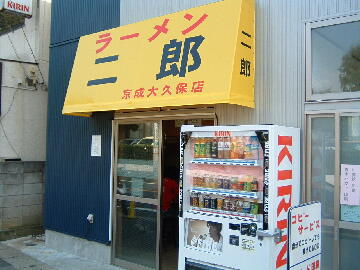
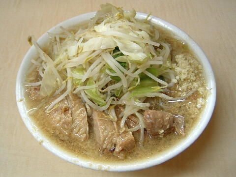
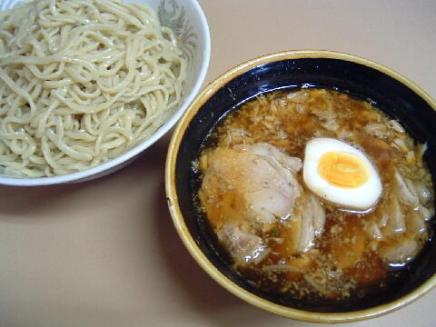
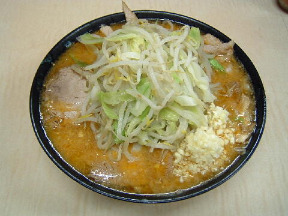
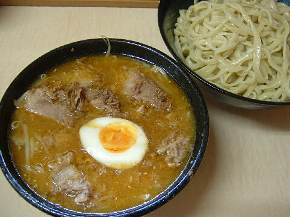

船橋市 三山 2-1-11
日・祝
11：00〜15：00

小ラーメン 700円、小ブタ 800円、小ダブル 900円
大ラーメン 800円、大ブタ 900円、大ダブル 1000円
ミニラーメン 600円
つけ麺 800円、大つけ麺 900円
みそラーメン 800円
みそつけ麺 800円、大みそつけ麺 900円
店員は、店主と奥様。
白コショウ（ギャバン）、（黒）コショウ、一味唐辛子。
レンゲ有。ティッシュ有。名刺無。
BGMは、AM。
トッピングは、普通。ミニの野菜多めは出来ない。
眉鍋組 有志が京成大久保店の情報を流しているTwitter（非公式）
「ラーメン二郎 京成大久保」でヤフー検索
「ラーメン二郎 京成大久保」でヤフーリアルタイム検索
「ラーメン二郎 京成大久保」でグーグル検索

小ブタ ニンニク
麺は、平中太、ストレート。シナシナした食感の麺で美味い。
大は売切だが現金＋100円でやってくれる。
ぶたは、厚切りで柔らかい豚がドボドボと入っていた。ラーメンでも３枚が標準。
スープは、豚の出汁がたっぷり出た醤油の立ったタイプがナミナミと。
ヤサイは、モヤシ7：キャベツ3の割合。シャキ気味。ノーコールでも結構な量。
ニンニクは、中粒に刻んだ生ニンニク。食後にデートはしないように。

つけ麺（ブタ入り）
トッピングはラーメンと同じ。食券提出時に伝える。あつもりも可能。
タレの丼には、ヤサイ少々、味玉半分、崩れたぶた。タレには少量のニンニクと辛味があった。
あとブタ入りにしたので（＋現金100円）、普通のぶたが３枚。
麺の丼には、麺のみ。

みそラーメン ニンニク
トッピングはラーメンと同じ。
ラーメンから醤油ダレを除いたものに、みそベースにラー油（鷹の爪入り）、生姜味、ニンニクが加えられる。
ブタの欠片も少々サービス。
みそは大にすることはできない。

みそつけ麺
トッピングはラーメンと同じ。食券提出時に伝える。あつもりも可能。
タレの丼には、ヤサイ少々、味玉半分、崩れたぶた。タレは生姜が効いたピリ辛のみそダレ。
麺の丼には、麺のみ。
ＰＣ店